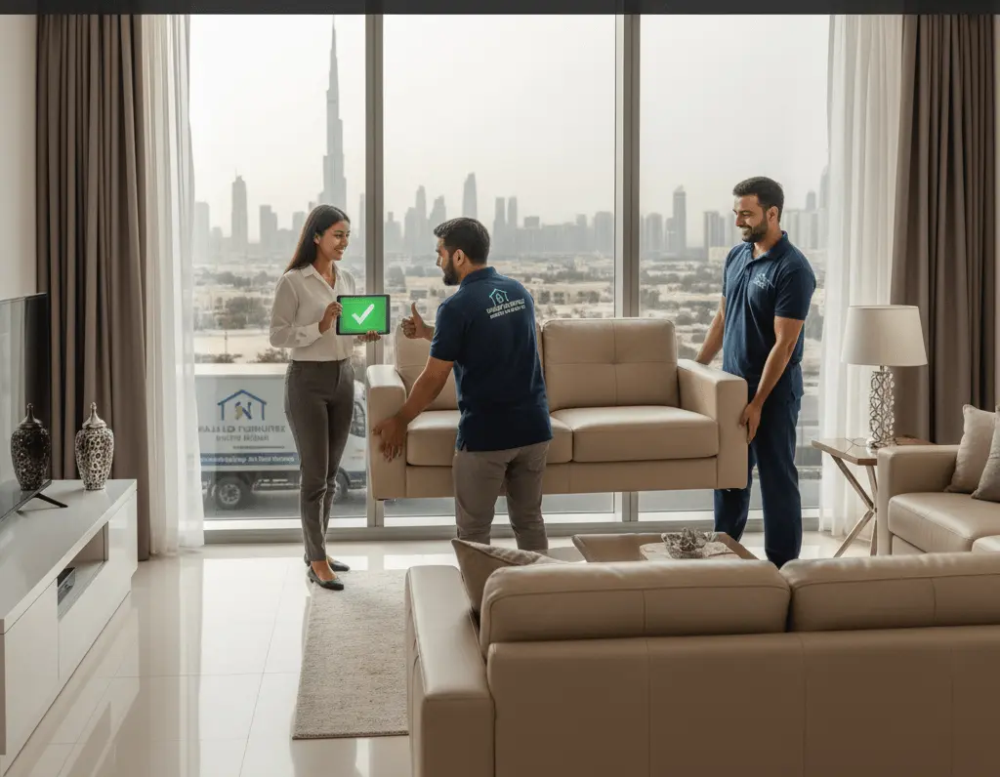

Every day, thousands of furniture pieces change hands in Dubai's secondhand market. But not all furniture sells equally well. Some items disappear within hours of listing, while others sit unsold for months.
Knowing which furniture types attract buyers saves you time and frustration. Office desks fly off the shelves because startups constantly need them. Meanwhile, that antique cabinet might take forever to find the right buyer. Smart sellers focus on items with proven demand, and Used furniture buyer in dubai services know exactly what moves quickly in today's market.
Bedroom sets dominate Dubai's used furniture market for one simple reason – everyone needs somewhere to sleep immediately. New residents can't wait weeks for delivery, so they hunt for ready-to-use bedroom furniture daily.
King-size beds with storage underneath command the highest prices. Dubai apartments often lack closet space, making storage beds incredibly valuable. These typically sell for 40-60% of retail price when in good condition. Regular bed frames without storage still sell well but expect 30-40% of original cost.
Wardrobes follow beds in popularity. Two-door wardrobes suit studio apartments perfectly, while four-door models work for families. White or light wood finishes sell faster than dark colors because they match any decor. Buyers particularly love wardrobes with mirrors – they save space and money.
Nightstands and dressing tables complete bedroom sets. Selling these as packages with beds increases value significantly. A complete bedroom set sells 30% faster than individual pieces because buyers prefer one-stop shopping.
Quick Tip: Clean mattresses thoroughly before selling. Use baking soda to remove odors, vacuum both sides, and mention if it's from a pet-free, smoke-free home. Clean mattresses sell three times faster.
Sofas lead living room sales, but condition matters enormously. Leather sofas in decent shape maintain value best – expect 50% of retail for well-maintained pieces. Fabric sofas depend heavily on cleanliness. Even expensive fabric sofas drop to 20-30% value with visible stains.
Coffee tables sell surprisingly well, especially glass-top models with storage. Dubai residents love dual-purpose furniture that maximizes small spaces. Nesting tables and ottoman storage boxes also move quickly. Simple designs outsell ornate styles because they fit various interior themes.
TV units remain hot sellers despite wall-mounting trends. Modern units with cable management systems attract young professionals setting up apartments. Those old-style entertainment centers? They barely sell unless practically given away. Buyers want sleek, minimal designs that don't dominate rooms.
Remote work permanently changed Dubai's furniture market. Home office setups now rival bedroom furniture in demand. Ergonomic chairs disappeared from stores during 2020 and secondhand ones still sell within days.
Desks suitable for laptops and monitors fetch good prices. L-shaped desks particularly appeal to professionals needing space for multiple screens. Even basic IKEA desks sell quickly because everyone knows assembly difficulty and original prices. Companies upgrading their offices often sell in bulk to Used office furniture buyer in dubai services, creating steady supply for this category.
Filing cabinets and office storage solutions found new life in home offices. What once gathered dust in corporate buildings now organizes personal documents in spare bedrooms. Wheeled units sell fastest – flexibility matters in multipurpose spaces.
Four-seater dining sets hit the sweet spot for Dubai apartments. They fit most dining areas without overwhelming spaces. Six-seater sets work for villas but move slower in the apartment-dominated market. Extendable tables command premium prices – buyers love flexibility for entertaining.
Round tables sell faster than rectangular ones in Dubai. They fit better in small spaces and feel less formal. Glass-top tables photograph well for online listings but require pristine condition. One visible chip crashes value completely.
Dining chairs sold separately rarely find buyers unless they're designer pieces. Complete sets with matching chairs triple your chances of quick sales. Mixed chair sets reflecting trendy mismatched styles actually sell if marketed correctly to younger buyers.
Understanding what doesn't sell prevents wasted effort. Oversized furniture struggles in Dubai's apartment market. That massive sectional sofa might be luxurious, but few homes can accommodate it. Similarly, antique furniture attracts limited interest unless priced very low.
Children's furniture faces tough competition from new budget options. Parents often prefer buying new for hygiene reasons. Outdoor furniture sells seasonally – great in October, impossible in July. Pool furniture particularly struggles unless targeting villa communities specifically.
Old-fashioned furniture styles barely sell regardless of quality. Dark wood bedroom sets from the 1990s, floral print sofas, and brass-accented pieces attract few buyers. Dubai's population skews young and prefers modern, minimal designs.
Setting realistic prices accelerates sales dramatically. Research shows furniture priced correctly sells 70% faster than overpriced items. Start by checking current listings for similar items, then price yours 10-15% lower for quick sales.
Bundle pricing works wonders. Selling a desk, chair, and lamp together for AED 500 beats trying to get AED 300, AED 150, and AED 100 separately. Buyers appreciate convenience and perceive bundles as better value. Professional furniture buying services often offer better prices for complete room sets versus individual pieces.
Seasonal pricing matters more than sellers realize. Prices peak in September when new residents arrive and January after bonuses. Summer months see lower demand except for bedroom furniture – people still need beds regardless of season.
Small improvements yield big returns. Tightening loose screws, fixing wobbly legs, and replacing missing hardware costs little but dramatically increases value. One seller increased his dining table price by AED 200 after spending AED 30 on new screws and felt pads.
Styling for photos makes huge differences. Remove clutter, add a plant or cushion for color, and stage pieces properly. That sofa looks better with throw pillows than bare. Dining tables photograph better with placemats than empty surfaces. Good photos literally double inquiry rates.
Honesty about condition builds trust and speeds transactions. Mention that scratch, show that stain, document that chip. Buyers appreciate transparency and often overlook minor flaws when properly informed. Hidden damage discovered during pickup kills deals and wastes everyone's time.
The Dubai used furniture market rewards sellers who understand what buyers actually want. Focus on popular items, price realistically, and present furniture well. Whether selling one piece or clearing an entire home, knowing market preferences turns unwanted furniture into quick cash.